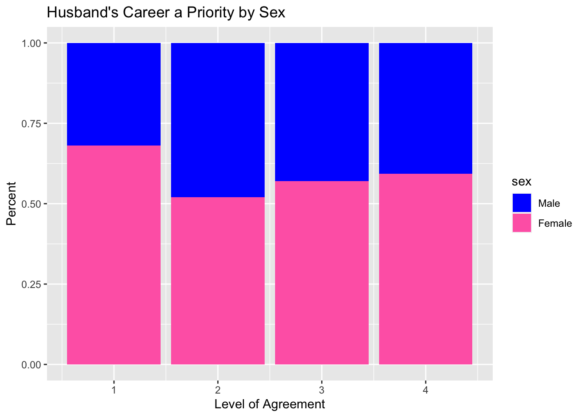
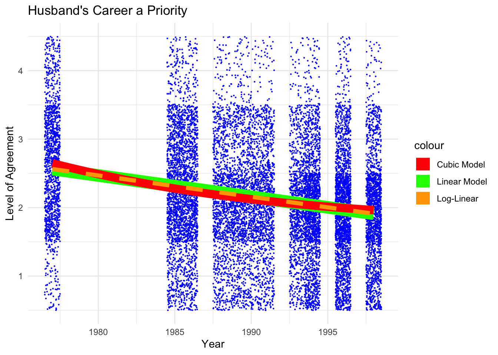
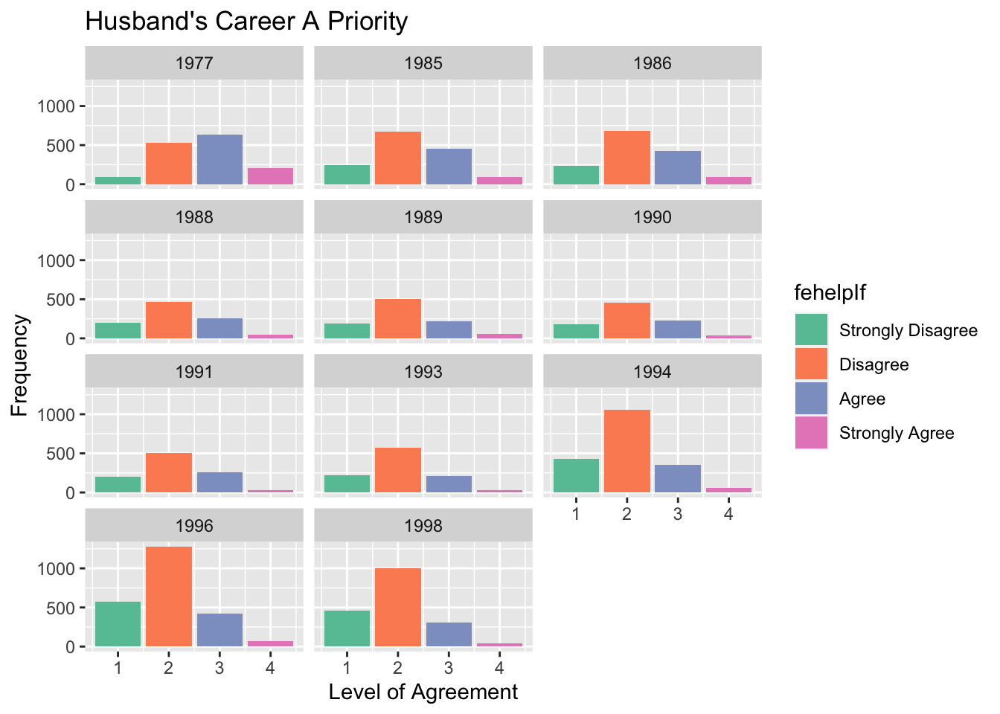

Code
# libraries
library(dplyr)
library(MASS)
library(readxl)
library(readr)
library(tidyverse)
library(ggplot2)
library(stats)
library(AER)
library(stargazer)
knitr::opts_chunk$set(echo = TRUE, warning=FALSE, message=FALSE)Nanci Kopecky
August 17, 2022
Is it more important for a wife to help her husband’s career than to have one herself? This was a question on a survey on American society from 1977 to 1998. It may seem out of date in 2023, but is it? The upheaval from Covid-19 pandemic underscored the stress of balancing work and family. During this time, The National Women’s Law Center stated that women left the workforce at a disproportionate rate and have not yet recovered (2022). This is a concern because of women’s forfeited skills, diminished wages, and unrealized earning potential.
Additionally, the BBC reported, “Researchers for Deloitte’s Women Work 2023 surveyed 5,000 women across 10 countries, 98% of whom were in heterosexual relationships. The data found that nearly 40% of respondents say their partner’s career takes precedence. They cited several reasons, ranging from financial and social factors to the burden of caretaking and household responsibilities,” (2023). These numbers indicate that the curated midcentury sterotypes remain relevent today.
This project will take a look at how the level of aggreement with the statement, “It is more for a wife to help her husband’s career than to have one herself,” is influenced and how the level of agreement has changed over time.
This dataset is from the General Social Survey (GSS) which has conducted research from 1972 on American Society. There are 15266 obervations (rows) with 6 variables (columns). The variables are year, age, sex, race, fehelp, and era.
For variable fehelp, repsondents state whether they 1=Strongly Agree to 4 = Strongly Disagree with the statement, “It is more for a wife to help her husband’s career than to have one herself.” (Please note: this order is reversed-see mutated data below!) For era, repsondents state whether they 1=Strongly Favor to 4 = Strongly Oppose the Equal Rights Amendment (ERA). Sex is coded as 1=Male and 2=Female; race is coded as 1=While, 2=Black, 3=Other.
As per the Class Project 2 instructions, this report will begin with Descriptive Statistics of the dataset and run Simple Linear Regression models and summaries. A scatterplot will give a visual perspective of the linear, log-linear, and cubic models, and with that, an exploration of which is the best fitting model. This report will then explore Multiple Regression models to consider the optimal model that can best explain how the level of agreement, fehelp is influenced. This consideration will be done through analysis of robust standard errors, reviewing the summaries of the models, and interpreting the F-statistics. The Results and Conclusion will report on the best model and if the level of agreement has significantly changed over time.
# Read in data and prepare data
GSS <- read_csv("Nanci_datafolder/GSS.csv", show_col_types = FALSE)
# Mutating *fehelp* to *fehelpI* by reversing the values 1=Strongly Agree through 4=Strongly Disagree to 1=Strongly Disagree through 4=Strongly Agree because it seems more intuitive for graphing. Also, the variables *sex* and *race* were changed from numerical to factor data for analysis. *Sex* and *race* were labeled as coded by GSS, 1=Male and 2=Female and 1=While, 2=Black, and 3=Other.
GSSI <- GSS %>%
mutate(fehelpI = case_when(
fehelp == 1 ~ 4,
fehelp == 2 ~ 3,
fehelp == 3 ~ 2,
fehelp == 4 ~ 1),
fehelpIf = factor(fehelpI, levels = c(1, 2, 3, 4), labels = c("Strongly Disagree", "Disagree", "Agree", "Strongly Agree")),
race = factor(race, levels = c(1, 2, 3), labels = c("White", "Black", "Other")),
sex = factor(sex, levels = c(1, 2), labels = c("Male", "Female"))
)
# Vectors with select variables
vars <- GSSI[c("year", "age", "fehelpI", "sex", "race")]
vars_num <- GSSI[c("year", "age", "fehelpI")]
vars_cat <- GSSI[c("sex","race")] year age fehelpI sex race
Min. :1977 Min. :18.0 Min. :1.000 Male :6591 White:12796
1st Qu.:1986 1st Qu.:31.0 1st Qu.:2.000 Female:8675 Black: 1868
Median :1991 Median :42.0 Median :2.000 Other: 602
Mean :1990 Mean :45.2 Mean :2.148
3rd Qu.:1996 3rd Qu.:58.0 3rd Qu.:3.000
Max. :1998 Max. :89.0 Max. :4.000 GSS_mean GSS_sd
year 1990.338530 6.0045320
age 45.200838 17.3496975
fehelpI 2.147714 0.7897105 Race
White 12796 83.820254
Black 1868 12.236342
Other 602 3.943404 Sex
Male 6591 43.17437
Female 8675 56.82563 Level_of_Agree
1 3033 19.867680
2 7711 50.510939
3 3756 24.603694
4 766 5.017686
Below are linear, log-linear, and cubic models and their summaries with fehelpI as the dependent variable and year as the independent variable. The regression models are displayed on a scatterplot to give a visual perspective of fitting the models to data.
Both variables can be considered continuous data for statistical analysis. The ordinal Likert variable fehelp meets the following conditions to be considered continuous: the sample size is large (n=15266); the number of response categories is close to large (4); the intervals between categories in theory are equal, and there is minimal skewness in the distribution of responses. Because the standard errors for nearly equal for both the lm function (which assumes homoscedasticity and independence) and coeftest function (which corrects for heteroscedasticity and possible dependence), it suggests that homoscedasticity and independence assumptions hold.
It is reasonable for this sample can be applied to the broader population over the time period surveyed. It can be expected that new data fed into the linear regression would fit the model.
In comparing the three models, the linear and log-linear appear to be a better fit from the visual perspective on the on the scatterplot. Both models closely follow negative correlation of the variables, that is, as time goes on, the level of agreement with the statement, “It is more for a wife to help her husband’s career than to have one herself,” decreases. The cubic model appears to subtly curve upward and does not appear to be a good fit to the data.
Along with the graphing perspective, the regression summaries show evidence that the linear and log-linear models are a good fit. While the R-squared values (0.06) and the residual standard errors (0.76) are the same for all three models, the coefficent estimates for the linear and log-linear models are significant, where they are not significant for the cubic model. Coefficient estimates are not statistically significant signal that this can be a weak model.
For the purpose of interpretation, along with the visual and initial analysis of the regression summaries, it appears the linear model would be the best model. See the models and scatterplot below.
Call:
lm(formula = fehelpI ~ year, data = GSSI)
Residuals:
Min 1Q Median 3Q Max
-1.56181 -0.31345 -0.03404 0.68655 2.09014
Coefficients:
Estimate Std. Error t value Pr(>|t|)
(Intercept) 63.938258 2.058893 31.05 <2e-16 ***
year -0.031045 0.001034 -30.01 <2e-16 ***
---
Signif. codes: 0 '***' 0.001 '**' 0.01 '*' 0.05 '.' 0.1 ' ' 1
Residual standard error: 0.7674 on 15264 degrees of freedom
Multiple R-squared: 0.05572, Adjusted R-squared: 0.05566
F-statistic: 900.7 on 1 and 15264 DF, p-value: < 2.2e-16
t test of coefficients:
Estimate Std. Error t value Pr(>|t|)
(Intercept) 63.9382576 2.0868118 30.639 < 2.2e-16 ***
year -0.0310452 0.0010482 -29.617 < 2.2e-16 ***
---
Signif. codes: 0 '***' 0.001 '**' 0.01 '*' 0.05 '.' 0.1 ' ' 1
Call:
lm(formula = fehelpI ~ log(year), data = GSSI)
Residuals:
Min 1Q Median 3Q Max
-1.56261 -0.31327 -0.03395 0.68673 2.08978
Coefficients:
Estimate Std. Error t value Pr(>|t|)
(Intercept) 471.156 15.621 30.16 <2e-16 ***
log(year) -61.744 2.056 -30.02 <2e-16 ***
---
Signif. codes: 0 '***' 0.001 '**' 0.01 '*' 0.05 '.' 0.1 ' ' 1
Residual standard error: 0.7674 on 15264 degrees of freedom
Multiple R-squared: 0.05576, Adjusted R-squared: 0.0557
F-statistic: 901.4 on 1 and 15264 DF, p-value: < 2.2e-16
t test of coefficients:
Estimate Std. Error t value Pr(>|t|)
(Intercept) 471.156 15.831 29.762 < 2.2e-16 ***
log(year) -61.744 2.084 -29.628 < 2.2e-16 ***
---
Signif. codes: 0 '***' 0.001 '**' 0.01 '*' 0.05 '.' 0.1 ' ' 1
Call:
lm(formula = fehelpI ~ I(year) + I(year^2) + I(year^3), data = GSSI)
Residuals:
Min 1Q Median 3Q Max
-1.64585 -0.27730 -0.03112 0.72270 2.03708
Coefficients:
Estimate Std. Error t value Pr(>|t|)
(Intercept) 1.193e+05 2.462e+05 0.484 0.628
I(year) -1.780e+02 3.716e+02 -0.479 0.632
I(year^2) 8.852e-02 1.870e-01 0.473 0.636
I(year^3) -1.468e-05 3.136e-05 -0.468 0.640
Residual standard error: 0.7663 on 15262 degrees of freedom
Multiple R-squared: 0.05849, Adjusted R-squared: 0.0583
F-statistic: 316 on 3 and 15262 DF, p-value: < 2.2e-16# Scatterplot with models
GSSI %>%
ggplot(aes(year, fehelpI)) +
geom_point(color = "blue", shape = 21, size = .1, position = position_jitter(width = 0.5, height = 0.5)) +
geom_smooth(method = "lm", se = FALSE, aes(color = "Linear Model"), size = 6) +
geom_smooth(method = "lm", formula = y ~ poly(x, 3), se = FALSE, aes(color = "Cubic Model"), size = 4) +
geom_smooth(method = "lm", formula = y ~ log(x), se = FALSE, aes(color = "Log-Linear Model"), size = 2, linetype = "dashed") +
labs(x = "Year", y = "Level of Agreement", title = "Husband's Career a Priority") +
theme_minimal() +
scale_color_manual(values = c("red", "green", "orange"), labels = c("Cubic Model", "Linear Model", "Log-Linear"))
Four additional models were run with each subsequent model incorportating an additional predictor variable to the simple regression mod_1, y=fehelpI and x=year. The other variables were age, sex, and race, and model 5 included interactions of sex and race. Examining the interaction of sex and race can capture if together these variables have an effect on the level of agrreement, but may not individually.
Including more variables may lead to a more optimal model. But, at a certain point, too many variables may be overfitting the data by including irrelevant variables and missing patterns or relationships. And, if there are highly correlated predictor variables, multicolinearity, then may be hard to interpret the effects of the individual variables. Analysis was done to find the best model in trying to determine the most relevent influences on the level of agreement.
The robust standard errors were calculated. All the standard errors are considered small (approximately 1/10 or less of the coefficient estimates) and therefore the coefficients estimates seem to be precise. A summary of the regression models shows there was a big increase in the R-squared from model 1 to model 2, from about 0.06 to 0.17. This means that by adding just the variable age that there was an 11% increase that explains how the variation of the level of agreement is is effected by the change in the age. The R-squared levels off for models 3, 4, and 5 at 0.171, 0.177, 0.178, respectively. This may lead one conclude the the additonal variables and interaction of the sex and race are not adding value to the model, but examine this closer. With the R-squared and adjusted R-squared equal for models 3 and 4, and that the coefficient estimates are all significant, it woudld be reasonable to say that sex and race do contribute to the best model. A check for collinearity was done with a correlation matrix and there is no collinearity.
At this point, model 4 is looking like the optimal model. But let’s compare this with a restricted model, model 5, by considering the interaction of the variables sex and race. Notable findings about the interaction of these two variables is that the coefficient estimates are both positive and negative depending the on the levels combined. The coefficient estimates are in comparison to the reference level white/male. For instance, the coefficient estimate for female is negative and statistically significant in comparison the male respondents. In other words, female respondents disagree more with the statement than males. Where as, in comparing other levels, repsondants who identified as Black or Other, the coefficient estimate was positive and statistically significant. This means their level of aggreement was higher white respondents. The only coefficient estimate that was not significantly different from the white/male reference was those that identified as Female/Other race.
Even thought the interaction of the two variables had interesting results, it does not appear to be the best model. In comparing the Sum of Squares Residuals (SSR) of the undrestricted model 4 and restricted model 5, it was found that SSR of the restricted model is less than and close to equal the unrestricted model indicating the interaction of the variables sex* and race do not contribute to a better model. And, the p-value of the F-statistic is not less than 0.05 which also suggests that there is not enough evidence to conclude the restricted model is better the unrestricted model.
The F-statistic of all the multiple regression models are large and the p-values are small. This shows there is a relationship between the level of aggreement and the predictor variables. The variation in the level of agreement is influenced by the predictor variables and it is not just random chance.
[[1]]
(Intercept) year
2.086401309 0.001048019
[[2]]
(Intercept) year age
1.9720745102 0.0009904014 0.0003312328
[[3]]
(Intercept) year age sexFemale
1.9745997298 0.0009916954 0.0003320222 0.0116658974
[[4]]
(Intercept) year age sexFemale raceBlack raceOther
1.9726156119 0.0009907891 0.0003326456 0.0116399569 0.0181847138 0.0329153073
[[5]]
(Intercept) year age sexFemale
1.9727356603 0.0009908435 0.0003326108 0.0125649004
raceBlack raceOther sexFemale:raceBlack sexFemale:raceOther
0.0286453931 0.0480284284 0.0369918691 0.0655064086
Regression Results
==============================================================================================================================================================
Dependent variable:
------------------------------------------------------------------------------------------------------------------------------------------
fehelpI
(1) (2) (3) (4) (5)
--------------------------------------------------------------------------------------------------------------------------------------------------------------
year -0.031*** -0.031*** -0.031*** -0.032*** -0.032***
(0.001) (0.001) (0.001) (0.001) (0.001)
age 0.015*** 0.015*** 0.016*** 0.016***
(0.0003) (0.0003) (0.0003) (0.0003)
sexFemale -0.106*** -0.108*** -0.093***
(0.012) (0.012) (0.013)
raceBlack 0.057*** 0.120***
(0.018) (0.029)
raceOther 0.315*** 0.355***
(0.030) (0.045)
sexFemale:raceBlack -0.103***
(0.037)
sexFemale:raceOther -0.073
(0.060)
Constant 63.938*** 63.727*** 63.611*** 65.273*** 65.188***
(2.059) (1.934) (1.929) (1.928) (1.928)
--------------------------------------------------------------------------------------------------------------------------------------------------------------
Observations 15,266 15,266 15,266 15,266 15,266
R2 0.056 0.167 0.171 0.177 0.178
Adjusted R2 0.056 0.167 0.171 0.177 0.177
Residual Std. Error 0.767 (df = 15264) 0.721 (df = 15263) 0.719 (df = 15262) 0.716 (df = 15260) 0.716 (df = 15258)
F Statistic 900.700*** (df = 1; 15264) 1,527.137*** (df = 2; 15263) 1,050.501*** (df = 3; 15262) 657.928*** (df = 5; 15260) 471.419*** (df = 7; 15258)
==============================================================================================================================================================
Note: *p<0.1; **p<0.05; ***p<0.01 fehelpI year age
fehelpI 1.0000000 -0.236051258 0.331911587
year -0.2360513 1.000000000 0.005440036
age 0.3319116 0.005440036 1.000000000[1] 7827.094[1] 7831.621[1] FALSE[1] FALSE# The SSR of the restricted model is less than, close to equal the unrestricted model indicating the interaction of the variables sex and race do not contribute to a better model. And the p-value of the F-statistic is not less than 0.05 which also suggests that there is not enough evidence to conclude the restricted model is better the unrestricted model. Based on the observations and data analysis, it is reasonable to conclude that model 4 emerges as the optimal model. Data assumptions were met, and the inclusion of additional variables were carefully explored. As a result, Model 4 fits the data well and the additional variables contribute to the model.
To answer the questions, how has the level of agreement changed over time and is it significant, it can be concluded that the level of agreement has decreased over time and that it is statistically significant. The coefficient estimate for year is -0.03 and the p-value is less than 0.01 therefore showing evidence that the decrease in level of agreement is significant.

Davern, M., Bautista, R, Freese, J., Herd, P., & Morgan, S.L. General Social Survey 1972-2022. Sponsored by National Science Foundation. NORC ed. Chicago: NORC, 2023: NORC at the University of Chicago. gssdataexplorer.norc.org
Morgan, K. (2023, June 22). Why many women prioritise their partners’ jobs. BBC. https://www.bbc.com/worklife/article/20230620-why-many-women-prioritise-their-partners-jobs
RStudio Team (2020). RStudio: Integrated Development for R. RStudio, PBC, Boston, MA URL http://www.rstudio.com/.
Tucker, J. & Vogtman, J.(2022). Resilient but not recovered. After two years of covid-19, women are still struggling. National Women’s Law Center. https://nwlc.org/wp-content/uploads/2022/03/FINAL-NWLC-Resilient-But-Not-Recovered-3.29.22.pdf
---
title: "603_ClassProject"
author: "Nanci Kopecky"
description: "General Social Survey"
date: "08/17/2022"
format:
html:
toc: true
code-fold: true
code-copy: true
code-tools: true
categories:
- Final Project
- Kopecky
---
```{r}
#| label: setup
#| warning: false
#| message: false
# libraries
library(dplyr)
library(MASS)
library(readxl)
library(readr)
library(tidyverse)
library(ggplot2)
library(stats)
library(AER)
library(stargazer)
knitr::opts_chunk$set(echo = TRUE, warning=FALSE, message=FALSE)
```
## Introduction
Is it more important for a wife to help her husband's career than to have one herself? This was a question on a survey on American society from 1977 to 1998. It may seem out of date in 2023, but is it? The upheaval from Covid-19 pandemic underscored the stress of balancing work and family. During this time, The National Women's Law Center stated that women left the workforce at a disproportionate rate and have not yet recovered (2022). This is a concern because of women's forfeited skills, diminished wages, and unrealized earning potential.
Additionally, the BBC reported, "Researchers for Deloitte's Women Work 2023 surveyed 5,000 women across 10 countries, 98% of whom were in heterosexual relationships. The data found that nearly 40% of respondents say their partner's career takes precedence. They cited several reasons, ranging from financial and social factors to the burden of caretaking and household responsibilities," (2023). These numbers indicate that the curated midcentury sterotypes remain relevent today.
This project will take a look at how the level of aggreement with the statement, "It is more for a wife to help her husband's career than to have one herself," is influenced and how the level of agreement has changed over time.
## Dataset Description
This dataset is from the General Social Survey (GSS) which has conducted research from 1972 on American Society. There are 15266 obervations (rows) with 6 variables (columns). The variables are *year*, *age*, *sex*, *race*, *fehelp*, and *era*.
For variable *fehelp*, repsondents state whether they 1=Strongly Agree to 4 = Strongly Disagree with the statement, "It is more for a wife to help her husband's career than to have one herself." (Please note: this order is reversed-see mutated data below!) For *era*, repsondents state whether they 1=Strongly Favor to 4 = Strongly Oppose the Equal Rights Amendment (ERA). *Sex* is coded as 1=Male and 2=Female; *race* is coded as 1=While, 2=Black, 3=Other.
## Analysis Plan
As per the *Class Project 2* instructions, this report will begin with **Descriptive Statistics** of the dataset and run **Simple Linear Regression** models and summaries. A scatterplot will give a visual perspective of the linear, log-linear, and cubic models, and with that, an exploration of which is the best fitting model. This report will then explore **Multiple Regression** models to consider the optimal model that can best explain how the level of agreement, *fehelp* is influenced. This consideration will be done through analysis of robust standard errors, reviewing the summaries of the models, and interpreting the F-statistics. The **Results and Conclusion** will report on the best model and if the level of agreement has significantly changed over time.
## Dataset
```{r}
# Read in data and prepare data
GSS <- read_csv("Nanci_datafolder/GSS.csv", show_col_types = FALSE)
# Mutating *fehelp* to *fehelpI* by reversing the values 1=Strongly Agree through 4=Strongly Disagree to 1=Strongly Disagree through 4=Strongly Agree because it seems more intuitive for graphing. Also, the variables *sex* and *race* were changed from numerical to factor data for analysis. *Sex* and *race* were labeled as coded by GSS, 1=Male and 2=Female and 1=While, 2=Black, and 3=Other.
GSSI <- GSS %>%
mutate(fehelpI = case_when(
fehelp == 1 ~ 4,
fehelp == 2 ~ 3,
fehelp == 3 ~ 2,
fehelp == 4 ~ 1),
fehelpIf = factor(fehelpI, levels = c(1, 2, 3, 4), labels = c("Strongly Disagree", "Disagree", "Agree", "Strongly Agree")),
race = factor(race, levels = c(1, 2, 3), labels = c("White", "Black", "Other")),
sex = factor(sex, levels = c(1, 2), labels = c("Male", "Female"))
)
# Vectors with select variables
vars <- GSSI[c("year", "age", "fehelpI", "sex", "race")]
vars_num <- GSSI[c("year", "age", "fehelpI")]
vars_cat <- GSSI[c("sex","race")]
```
## Descriptive Statistics
```{r}
# Summary
summary(vars)
```
```{r}
# Mean and standard deviation
cbind(GSS_mean = sapply(vars_num, mean),
GSS_sd = sapply(vars_num, sd))
```
```{r}
# Frequencies and percentages
Race <- table(GSSI$race)
cbind(Race, prop.table(Race)*100)
Sex <- table(GSSI$sex)
cbind(Sex, prop.table(Sex)*100)
Level_of_Agree <- table(GSSI$fehelpI)
cbind(Level_of_Agree, prop.table(Level_of_Agree)*100)
```
```{r}
# Bar graphs
ggplot(GSSI, aes(fehelpI)) +
geom_bar(aes(fill=sex), position = "fill") +
labs(title = "Husband's Career a Priority by Sex", x = "Level of Agreement", y = "Percent") +
scale_fill_manual(values = c("Male" = "blue", "Female" = "#FF69B4"))
```
```{r}
# Bar graph to view distribution of *fehelpI*
GSSI %>% ggplot(aes(fehelpI, fill= fehelpIf))+
geom_bar() +
labs(x = "Level of Agreement", y = "Frequency", title = "Husband's Career A Priority" ) +
scale_fill_brewer(palette = "Set2")
```
## Simple Linear Regression
Below are linear, log-linear, and cubic models and their summaries with *fehelpI* as the dependent variable and *year* as the independent variable. The regression models are displayed on a scatterplot to give a visual perspective of fitting the models to data.
Both variables can be considered continuous data for statistical analysis. The ordinal Likert variable *fehelp* meets the following conditions to be considered continuous: the sample size is large (n=15266); the number of response categories is close to large (4); the intervals between categories in theory are equal, and there is minimal skewness in the distribution of responses. Because the standard errors for nearly equal for both the lm function (which assumes homoscedasticity and independence) and coeftest function (which corrects for heteroscedasticity and possible dependence), it suggests that homoscedasticity and independence assumptions hold.
It is reasonable for this sample can be applied to the broader population over the time period surveyed. It can be expected that new data fed into the linear regression would fit the model.
In comparing the three models, the linear and log-linear appear to be a better fit from the visual perspective on the on the scatterplot. Both models closely follow negative correlation of the variables, that is, as time goes on, the level of agreement with the statement, "It is more for a wife to help her husband's career than to have one herself," decreases. The cubic model appears to subtly curve upward and does not appear to be a good fit to the data.
Along with the graphing perspective, the regression summaries show evidence that the linear and log-linear models are a good fit. While the R-squared values (0.06) and the residual standard errors (0.76) are the same for all three models, the coefficent estimates for the linear and log-linear models are significant, where they are not significant for the cubic model. Coefficient estimates are not statistically significant signal that this can be a weak model.
For the purpose of interpretation, along with the visual and initial analysis of the regression summaries, it appears the linear model would be the best model. See the models and scatterplot below.
```{r}
# Basic linear model and summary
mod_1 <- lm(fehelpI ~ year, GSSI)
summary(mod_1)
coeftest(mod_1, vcov. = vcovHC)
```
```{r}
# Log-linear model and summary
mod_log <- lm(fehelpI ~ log(year), GSSI)
summary(mod_log)
coeftest(mod_log, vcov. = vcovHC)
```
```{r}
# Cubic model and summary
mod_cubic <- lm(fehelpI ~ I(year) + I(year^2) + I(year^3), GSSI)
summary(mod_cubic)
```
```{r}
# Scatterplot with models
GSSI %>%
ggplot(aes(year, fehelpI)) +
geom_point(color = "blue", shape = 21, size = .1, position = position_jitter(width = 0.5, height = 0.5)) +
geom_smooth(method = "lm", se = FALSE, aes(color = "Linear Model"), size = 6) +
geom_smooth(method = "lm", formula = y ~ poly(x, 3), se = FALSE, aes(color = "Cubic Model"), size = 4) +
geom_smooth(method = "lm", formula = y ~ log(x), se = FALSE, aes(color = "Log-Linear Model"), size = 2, linetype = "dashed") +
labs(x = "Year", y = "Level of Agreement", title = "Husband's Career a Priority") +
theme_minimal() +
scale_color_manual(values = c("red", "green", "orange"), labels = c("Cubic Model", "Linear Model", "Log-Linear"))
```
## Multiple Regression
Four additional models were run with each subsequent model incorportating an additional predictor variable to the simple regression mod_1, y=*fehelpI* and x=*year*. The other variables were *age*, *sex*, and *race*, and model 5 included interactions of *sex* and *race*. Examining the interaction of *sex* and *race* can capture if together these variables have an effect on the level of agrreement, but may not individually.
Including more variables may lead to a more optimal model. But, at a certain point, too many variables may be overfitting the data by including irrelevant variables and missing patterns or relationships. And, if there are highly correlated predictor variables, multicolinearity, then may be hard to interpret the effects of the individual variables. Analysis was done to find the best model in trying to determine the most relevent influences on the level of agreement.
The robust standard errors were calculated. All the standard errors are considered small (approximately 1/10 or less of the coefficient estimates) and therefore the coefficients estimates seem to be precise. A summary of the regression models shows there was a big increase in the R-squared from model 1 to model 2, from about 0.06 to 0.17. This means that by adding just the variable *age* that there was an 11% increase that explains how the variation of the level of agreement is is effected by the change in the *age*. The R-squared levels off for models 3, 4, and 5 at 0.171, 0.177, 0.178, respectively. This may lead one conclude the the additonal variables and interaction of the *sex* and *race* are not adding value to the model, but examine this closer. With the R-squared and adjusted R-squared equal for models 3 and 4, and that the coefficient estimates are all significant, it woudld be reasonable to say that *sex* and *race* do contribute to the best model. A check for collinearity was done with a correlation matrix and there is no collinearity.
At this point, model 4 is looking like the optimal model. But let's compare this with a restricted model, model 5, by considering the interaction of the variables *sex* and *race*. Notable findings about the interaction of these two variables is that the coefficient estimates are both positive and negative depending the on the levels combined. The coefficient estimates are in comparison to the reference level white/male. For instance, the coefficient estimate for female is negative and statistically significant in comparison the male respondents. In other words, female respondents disagree more with the statement than males. Where as, in comparing other levels, repsondants who identified as Black or Other, the coefficient estimate was positive and statistically significant. This means their level of aggreement was higher white respondents. The only coefficient estimate that was not significantly different from the white/male reference was those that identified as Female/Other race.
Even thought the interaction of the two variables had interesting results, it does not appear to be the best model. In comparing the Sum of Squares Residuals (SSR) of the undrestricted model 4 and restricted model 5, it was found that SSR of the restricted model is less than and close to equal the unrestricted model indicating the interaction *of the variables* sex\* and *race* do not contribute to a better model. And, the p-value of the F-statistic is not less than 0.05 which also suggests that there is not enough evidence to conclude the restricted model is better the unrestricted model.
The F-statistic of all the multiple regression models are large and the p-values are small. This shows there is a relationship between the level of aggreement and the predictor variables. The variation in the level of agreement is influenced by the predictor variables and it is not just random chance.
```{r}
# Models
mod_2 <- lm(fehelpI ~ year + age, GSSI)
mod_3 <- lm(fehelpI ~ year + age + sex, GSSI)
mod_4 <- lm(fehelpI ~ year + age + sex + race, GSSI)
mod_5 <- lm(fehelpI ~ year + age + (sex*race), GSSI)
```
```{r}
# Robust standard errors for corresponding coefficients
rob_se <- list(
sqrt(diag(vcovHC(mod_1, type = "HC1"))),
sqrt(diag(vcovHC(mod_2, type = "HC1"))),
sqrt(diag(vcovHC(mod_3, type = "HC1"))),
sqrt(diag(vcovHC(mod_4, type = "HC1"))),
sqrt(diag(vcovHC(mod_5, type = "HC1")))
)
rob_se
```
```{r}
# Summary of the regression models
stargazer(mod_1, mod_2, mod_3, mod_4, mod_5, title = "Regression Results",
type = "text", # Use "text" to print the table to the console
digits = 3,
header = TRUE
)
```
```{r}
# Check for collinearity
GSSI_num_subset <- GSSI[, c("fehelpI", "year", "age")]
cor(GSSI_num_subset)
# There is no collinearity between the numerical variables.
```
```{r}
# Restricted Model
# Compute the Sum of Squares Residuals (SSR)
RSSR_GSSI <- sum(mod_5$residuals^2)
RSSR_GSSI
# Unrestricted model
UNR_SSR_GSSI <- sum(mod_4$residuals^2)
UNR_SSR_GSSI
# Compare SSR's
RSSR_GSSI >= UNR_SSR_GSSI
# Compare Restricted and Unrestricted Model
Fstat_GSSI <- ((RSSR_GSSI-UNR_SSR_GSSI)/1)/(UNR_SSR_GSSI/(nrow(GSSI)-4-1))
# Compute the p-value
pval_Fstat_GSSI <- 1 - pf(Fstat_GSSI, df1 = 1, df2 = nrow(GSSI)-4-1)
# Check if the null is rejected at the 1% significance level
pval_Fstat_GSSI < 0.05
# The SSR of the restricted model is less than, close to equal the unrestricted model indicating the interaction of the variables sex and race do not contribute to a better model. And the p-value of the F-statistic is not less than 0.05 which also suggests that there is not enough evidence to conclude the restricted model is better the unrestricted model.
```
## Conclusion and Discussion
Based on the observations and data analysis, it is reasonable to conclude that model 4 emerges as the optimal model. Data assumptions were met, and the inclusion of additional variables were carefully explored. As a result, Model 4 fits the data well and the additional variables contribute to the model.
To answer the questions, how has the level of agreement changed over time and is it significant, it can be concluded that the level of agreement has decreased over time and that it is statistically significant. The coefficient estimate for year is -0.03 and the p-value is less than 0.01 therefore showing evidence that the decrease in level of agreement is significant.
```{r}
# Bar graph to view distribution of *fehelpI*
GSSI %>% ggplot(aes(fehelpI, fill= fehelpIf))+
geom_bar() +
labs(x = "Level of Agreement", y = "Frequency", title = "Husband's Career A Priority" ) +
scale_fill_brewer(palette = "Set2") +
facet_wrap(~year, ncol =3)
```
```{r}
ggplot(GSSI, aes(x = factor(year), y = fehelpI, fill = factor(year))) +
geom_violin() +
labs(x = "Year", y = "Level of Agreement") +
ggtitle("Husband's Career a Priority by Year")
```
## Bibliography
Davern, M., Bautista, R, Freese, J., Herd, P., & Morgan, S.L. General Social Survey 1972-2022. Sponsored by National Science Foundation. NORC ed. Chicago: NORC, 2023: NORC at the University of Chicago. gssdataexplorer.norc.org
Morgan, K. (2023, June 22). *Why many women prioritise their partners' jobs*. BBC. https://www.bbc.com/worklife/article/20230620-why-many-women-prioritise-their-partners-jobs
RStudio Team (2020). RStudio: Integrated Development for R. RStudio, PBC, Boston, MA URL
http://www.rstudio.com/.
Tucker, J. & Vogtman, J.(2022). Resilient but not recovered. After two years of covid-19, women are still struggling. National Women's Law Center. https://nwlc.org/wp-content/uploads/2022/03/FINAL-NWLC-Resilient-But-Not-Recovered-3.29.22.pdf